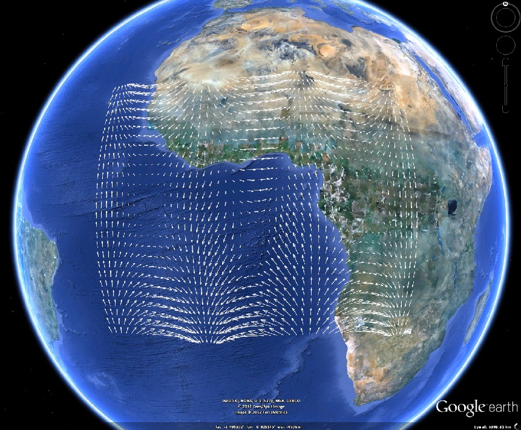

kml.quiver
Creates a quiver plot similar to built-in quiver function. Inputs are the coordinates defined by longitude and latitude, and arrow sizes given by the speeds u and v.
Contents
Syntax
kml.quiver(longitude, latitude, u, v) kml.quiver(...,'PropertyName',PropertyValue,...)
Description
Creates a quiver plot using 2D arrows. The arrows are created in the coordinates defined by longitude and latitude, and are scaled using the speeds u and v, and the size of the grid.
The units for the angular values are normally given in degrees, but this can be changed by calling: kml.useDegrees; or kml.useRadians; before plotting.
It is possible to fine tune the point properties using name-value pairs:
kml.quiver(...,'PropertyName',PropertyValue,...)
Properties
| Property Name | Type | Description |
|---|---|---|
| 'name' | string | Name of the quiver plot inside the kml file |
| 'description' | string | A short description of what the quiver plot represents |
| 'visibility' | true/false | Control the initial visibility of the quiver plot |
| 'color' | kml color string | Defines the color of the arrows. Must be a valid hex color string input, in the style AABBGGRR |
| 'plotArrows' | true/false | Control if the arrow heads will be draw or not |
| 'arrowBaseSize' | double | Defines the vertical size of the arrow head, proportional to the full arrow size |
| 'arrowHeadSize' | double | Defines the horizontal size of the arrow head, proportional to the full arrow size |
| 'scale' | double | Defines a scale factor to be applied to the whole quiver plot |
| 'altitude' | double | Altitude where the 2D arrows should be plotted. Input in meters. |
| 'altitudeMode' | string | Choose if the altitude value is absolute to the earth model, relative to the ground level, or should be clamped to the ground. Valid inputs: 'absolute', 'relativeToGround', 'clampToGround' |
| 'timeStamp' | kml date string | Associates the quiver plot to a moment in time. Should not be used together with timeSpan. Should be a string in the XML time format (more information available here) |
| 'timeSpanBegin' | kml date string | Defines the moment in time where the quiver plot starts to exist. Should not be used together with timeStamp. Should be a string in the XML time format (more information available here) |
| 'timeSpanEnd' | kml date string | Defines the moment in time where the quiver plot finishes to exist. Should not be used together with timeStamp. Should be a string in the XML time format (more information available here) |
Example
% Create a new kml object k = kml('my kml file'); % Create a sample quiver plot in the kml file [x,y] = meshgrid(-5:.2:5,-2:.15:2); z = x .* exp(-x.^2 - y.^2) + y.*sin(x); [px,py] = gradient(z,.2,.15); k.quiver(5*x,10*y,8*px,8*py) % Save the kml and open it in Google Earth k.run; GoogleEarthImage
This is the result of running this example:
This file is part of the kml toolbox. Copyright 2011 Rafael Fernandes de Oliveira (rafael@rafael.aero)